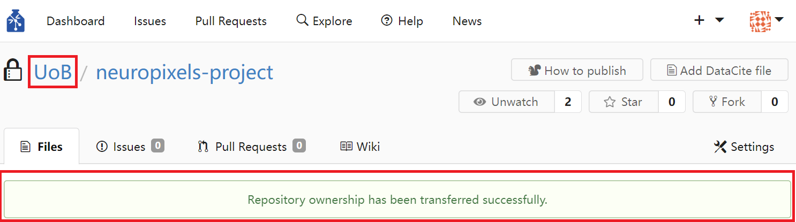

Repository Management with GIN Web Interface
Contents
Repository Management with GIN Web Interface#
Register Your Account#
If you are using local GIN, in your web browser type in https://www.bristol.ac.uk/bristolgin/. To create an account on the public GIN, type in https://gin.g-node.org/. In the top menu click on Register. Type in your information to create an account.

Figure 1. Register Your Account
If you are using the public GIN, you will be asked to verify your email. Once this is done, you can start using GIN.
Create Repository#
A research data repository is a structured folder containing your research raw data, metadata, derived data and any other files related to the research project. In order to create a repository, click the + icon on the right of the top menu.

Figure 2. Create Repository
You should be able to see the webform below.

Figure 3. Enter Repository Details
The owner of a repository can either be you or an organisation. If you assign the ownership to an organisation, make sure that you are a member of that organisation and have all required user rights to manipulate the repository as intended. Note that, by default, newly created repositories are always private. You can change the visibility of your repository at a later stage.
You can indicate which files and folders of the local instance of the repository should not be synchronised with the remote repository by providing a gitignore file. You can also select a .gitignore file template to be initialised with your repository and edit it later. You can chose the type of license you want to associate with your repository, as well as add a README file to your repository. It is useful to include a README file and use it to explain the structure of your repository and how to use it. md files use the Markdown language to edit and style text documents with a guide on how to use it provided here.
Once you are happy with the information you entered, click the green Create Repository button at the bottom of the web form. This will initialise a repository together with the .gitignore, license, and README files (if you selected so).
Find Repository#
The easiest way to find a repository is to click the Dashboard entry on the left of the top menu.
{kind=link}
Figure 4. Where to Find your Dashboard
Repositories that you either own or are collaborating on will be shown in the repositories section on the right side of the Dashboard.
{kind=link}
Figure 5. Your Repositories Section
Other repositories that belong to you or any other researcher using the same GIN network can be found by clicking the Explore entry at the top menu. Other researchers’ repositories will only be visible if the repository owners listed them as discoverable via Explore.
{kind=link}
Figure 6. Search All Repositories Visible to You
In cases where you are the owner of a repository, its name will be preceded by your account name and a forward-leaning slash. Repositories can also be owned by organisations and in that case their names will be preceded by the name of the owner organisation.
Update Repository (Upload Files)#
A repository can be updated (or new files to a repository can be added) by clicking the blue Upload file button located at the main page of your repository. This action of bringing the state of the remote repository in line with the state of the local copy of it that you are working with is also known as pushing changes.
{kind=link}
Figure 7. Update Repository by Uploading Files
Clicking the Upload files button should bring you to the files upload page shown below.

Figure 8. Upload Files Page
As indicated in the area delineated by a blue dashed line, you can only upload files that are not larger than 10 GB and no more than 100 files at once. This is a web interface limitation that command line tools do not have. You can drag and drop files and folder to the area or you can click on the area and upload files using a pop-up dialog box. If a file cannot be uploaded, a grey x symbol would appear over the file and an error message would be displayed if you hover above the file icon with your mouse.
{kind=link}
Figure 9. Files that Cannot Be Uploaded Are Marked by ‘X’
If you want to uppload files to a different folder in your repository, navigate to its location by opening folders in its path and click on the blue Upload files button again or edit the path in the Files upload page. Folder names should be separated by ‘/’.

Figure 10. Change Upload Folder by Editing Path
In order to finalise your upload, write down a commit message. The message should be succinct but informative enough so that you or your collaborators could identify changes that were introduced to the repository. Finally, press the green Commit changes button.

Figure 11. Commit Changes to Repository
Download (Clone) Repository#
A repository can be downloaded (cloned) by navigating to the main repository page and clicking the Download repository button.

Figure 12. Download Repository
You will be prompted to choose the type of the archived format the repository to be downloaded as. Zip format is common in Windows and MacOS systems, while tarball (tar.gz) is commonly used on Linux systems, but the latter can equally work well with zip files.
Download File#
Downloading the entire repository might not be what you are looking for and instead you need to download a particular individual file. In order to do that, navigate to the location of the file inside the repository, click the file you want, and click the Download button to the right of the file or the Download link underneath the file. The file will be downloaded uncompressed or opened in your browser (click ‘Save As…’ or Ctrl+S to save it).
{kind=link}
Figure 13. Download File
Delete File#
Delete an unwanted file by navigating to the file location inside the repository and click the Rubish bin icon to the right of the file. Note that you will be brought to the Commit changes page similar to the one used for uploading files. Write down a commit message indicating that the file is being deleted.

Figure 14. Delete File
Create Text File#
You can create text files using GIN web interface. In order to do that, navigate to the location inside the repository where you want to create a new file and click the blue New file button.

Figure 15. Create Text File
Clicking the button whould bring you to the file editing page. In the path entry specify the extended path (if needed) and the name of the file (e.g., project-description.md). If you specify the extension of the file as .md, you would notice a file editing menu appearing. The editing tools are specifically designed for Markdown files. You can read more about using Markdown to edit text files in the Markdown Guide.

Figure 16. Name and Edit Text File
When you finish editing the file, write down a commit message at the bottom of the page and click the green Commit changes button. If you edit the file in the future, you would need to commit the file with a new message. If you change its name or path, the file would be renamed or moved to the new location accordingly. You are not allowed to overwrite an existing file by creating another text file with the same name and in the same location.
Rename Repository#
You can rename a repository in the repository settings. In your repository page click on the Settings pane located in the top right corner of the page.

Figure 17. Locating Repository Settings
Inside the Settings/Options page change the original repository name to a new one and click the green Update Settings button.

Figure 18. Rename Repository
Change Visibility of Repository#
When you initialise a new repository, its visibility is set to private by default. At some point you may want to change the visibility. This is especially relevant when you are about to publish the output of your research project. You can change the visibility of a repository in the repository settings. In your repository page click on the Settings pane located in the top right corner of the page (Figure 17). Inside the Settings/Options page untick the Private box. You can also change whether the repository is discoverable on the GIN network via the Explore top menu entry (Figure 6). You just need to tick/untick the Listed box. Do not forget to update settings by clicking the green Update Settings button.

Figure 19. Repository Visibility
Transfer Ownership of Repository#
If you want to transfer the ownership of a repository either to another person or an organisation, navigate to your repository page and click on the Settings pane located in the top right corner of the page (Figure 17). Then scroll down to the bottom of the Settings/Options page to the Danger section and click on Transfer Ownership button. When transfering the ownership, make sure that you absolutely understanding what you are doing. If you are transfering the ownership to an organisation and still want to retain the repository control, make sure that you are a member of that organisation and have the required privileges within the organisation. Otherwise you may lose access to the repository.
{kind=link}
Figure 20. Transfer Ownership of Repository
Assuming you successfully transfer the ownership of your repository, you should see the change in the ownerhip reflected in the repository path. For example, initially you would see the repository appearing under your name in the GIN network.
{kind=link}
Figure 21. Repository Ownership is Reflected in Path
After carrying out the ownership transfer, repository path should then reflect this change. A green transparent banner should also appear in the repository page stating that the transer of ownership was successfully carried out.
{kind=link}
Figure 22. Notification about Change in Repository Ownership
Delete Repository#
Delete the repository by first navigating to your repository page and then clicking on the Settings pane located in the top right corner of the page (Figure 17). Subsequently, scroll down to the bottom of the Settings/Options page to the Danger section and click on Delete This Repository button.
{kind=link}
Figure 23. Delete Repository
Add Collaborators to Repository#
Adding collaborators to a repository is straight forward. Navigate to the repository page and click on the Settings pane located in the top right corner of the page (Figure 17). Then click on the Collaboration entry in the left sidebar menu. This should bring the Collaboration page where you can specify a user that you want to share your repository with or invite a collaborator via email if they are not using GIN yet.
{kind=link}
Figure 24. Add Collaborator
The newly added collaborator should now be listed as having the Write permission to the repository.
{kind=link}
Figure 25. Manage Collaborator Permissions
Make sure that you set the user privileges correctly. Admin rights would give a user full control of the repository, including an option to delete the repository. Be careful with granting repository Admin rights to anyone. The Write permission allows a user to submit changes to the repository, but ultimately these changes have to be approved by other users who have Admin rights to the repository. The Read persmission allows a user to browse and download the repository only. One of the advantages of using GIN over regular file share and storage systems provided by many research institutions is that it allows repository owners to control precisely who has what kind of access to a particular repository.
Create Organisation#
Often we do not work on our projects alone. At a minimum, you are likely to have a supervisor who, like you, is hired by a research institution. In our case it is the University of Bristol (UoB). You may want to create an organisation instance for your institution. The entire university might be too broad and instead you may want to create a more narrowly defined organisational instance, like Team Neuroscience or Our Research Group (e.g., Mellor Group). It might be more convenient/appropriate to manage repositories on the basis of an organisation. So make sure that it is created at the effective level of management (typically a lab/research group or a cooperation of labs/research groups). In order to create an organisation, click on the ‘+’ icon located on the right side of the top menu and choose the New Organization option.
{kind=link}
Figure 26. Create Organisation
You should be prompted to enter the name of the new organisation. Naming the organisation after the reasearch group that you are part of is typically the most appropriate practice as often this is the organisational entity where the research coordination takes place.
{kind=link}
Figure 27. Name New Organisation
Once the organisation is created, you are brought to the Dashboard of the new organisation. If you click on the blue View organisation-name button in the top right corner, you are brought to the page of that organisation.
{kind=link}
Figure 28. Dashboard of Newly Created Organisation
On the organisation’s page you can adjust organisation’s settings by clicking on the cogwheel located immediately to the right of the organisation’s name. You can also create a new repository under the ownership of the newly created organisation. You can add other GIN users to the organisation by clicking the blue Invite Someone button in the People section. The new members would not have admin rights by default. Furthermore, you can create teams that are part of the organisation by clicking the Create New Team button in the Teams section. Finally, notice that the newly created organisation has one team as the part of it already called Owners. By clicking the Owners team you can read about the purpose of this team.
{kind=link}
Figure 29. Page of Newly Created Organisation
On the Owners team page you can see that the team unites all members of the organisation that have the highest level of privelege in the organisation and can access and fully control all organisational repositories. You have to be very careful of who should be part of the Owners team. Ideally, the principal investigator should be part of it and a designated manager of the lab.
{kind=link}
Figure 30. Page of Owners Team
Delete Organisation#
In order to delete an organisation, navigate to the organisation’s page by clicking the Dashboard entry on the left side of the top menu followed by clicking the Organization entry on the right side bar and selecting the organisation of interest.
{kind=link}
Figure 31. Navigate to Organisation’s Page
Once you are brought to the organisation’s page, click the cogwheel settings icon immediately to the right of the organisation’s name.

Figure 32. Organisation’s Settings
In the settings page click on the Delete Organization entry located in the left side bar and confirm the deletion.
{kind=link}
Figure 33. Delete Organisation
Add Organisation Member#
In order to make a user a member of an organisation, navigate to the organisation’s page (Figure 31). Once you are on the organisation’s page, click the blue Invite Someone button located in the People section.
{kind=link}
Figure 34. Add New Organisation Member
You will be prompted to search for a user. Click the blue Invite Now button to add the user. The new member would not have admin rights by default.

Figure 35. Search for User to Add to Organisation
Grant Organisation Ownership to User#
Before you make someone an owner of an organisation make sure that the person is a member of that organisation (see how to do it in the section titled Add an organisation member). Navigate to the organisation’s page (Figure 31). Organisation member avatars appear in the People section of the organisation’s page. Organisation owners are all part of the default Owners team. In order to grant organisation ownership to a regular organisation member, first click on the Owners team in the Teams section of the organisation’s page.
{kind=link}
Figure 36. Regular Organisation Members and Owners
You should then be brought to the Owners team’s page. You can search for a user and add the user to the Owners team by clicking the green Add Team Member button located inside the Team Members section. The added new member of the team will also be the owner of the organisation with full control rights of the organisation, its teams, and repositories. Be very careful whom you grant the organisation ownership.
{kind=link}
Figure 37. Add Organisation Member to Owners Team
Create Repository under Organisation’s Ownership#
In order to create a new repository that is owned by an organisation, navigate to the organisation’s page (Figure 31). While you are on the organisation’s page, click the green New Repository button. You will be prompted to enter repository details in the same way when creating a personal repository (Figure 3).
{kind=link}
Figure 38. Create New Organisational Repository
Create Team#
Teams are always part of an organisation. They are useful for project management as they subdivide the organisation into overlapping entities that consist of users working on a particular project, working on a few related projects, or specialising in particular research aspects (e.g., silicon probe recordings, data management, computational modelling, etc.). You can create a team by navigating to the organisation’s page (Figure 31). Once you are on the organisation’s page, click on the blue Create New Team button inside the Teams section.
{kind=link}
Figure 39. Create Team
Next, you are requested to fill in a webform naming and describing the team, as well as assigning a permission level of the team. In most cases you would want to give the team the Write access as they are likely to be developing the data repository and actively pushing changes to it. You are unlikely to grant the team Admin access as this type of permission in most cases should be reserved to repository and organisation owners. Finally, click the green Create New Team button.
{kind=link}
Figure 40. Describe Team and its Permissions
Add Team Members#
In order to add team meambers, navigate to the organisation’s page (Figure 31) and click on the team of interest.
{kind=link}
Figure 41. Navigate to Team’s Page
Once you are on the team’s page, you can join the team by clicking the blue Join button or you can click the green Add Team Member button to add another user to the team.
{kind=link}
Figure 42. Joining or Adding Members to Team
Add a Repository to Team#
You can only add a repository to a team if there is a repository belonging to the same organisation with that team. In order to add a repository to the team, navigate to the organisation’s page (Figure 31) and click on the team of interest (Figure 41). Once you are on the team’s page, you can see team members and repositories associated with the team. Click on repositories entry and search for a repository you would like to add. Add a repository by clicking the green Add Team Repository button.
{kind=link}
Figure 43. Add Team Repository
Delete Team#
Navigate to the organisation’s page (Figure 31) and then to the team’s page (Figure 41). Once you are on the team’s page, click on the bluish green Settings button.
{kind=link}
Figure 44. Access Team’s Settings
In order to delete the team, click the red Delete This Team button located at the bottom of the Settings page.
{kind=link}
Figure 45. Delete Team
Delete Account#
In order to delete your account, you have to leave all teams and organisations you are a member of. If you are the sole member of a team, you have to delete that team as well. If you are the only owner of an organisation, you have to grant the ownership of an organisation to another organisation member before you leave that organisation. If you are the sole member of that organisation, you would also have to delete that organisation. Once you no longer are a member of any team and organisation, click on your avatar located on the right side of the top menu. Once you see a drop-down menu opening, click on Your Settings entry.
{kind=link}
Figure 46. Access Account’s Settings
On your account settings page click on the Delete Account entry located at the bottom of the left sidebar. Enter your account password when prompted and press the red Confirm Deletion button. This action terminates your GIN account.
{kind=link}
Figure 47. Delete Your Account
Report Issue#
You can report any issue or leave a comment related to a particular repository by navigating to the repository page, clicking on the Issues pane, and pressing the green New Issue button. Any open (unsolved) and closed (solved) issues can also be found on this page. Before reporting an issue it is worth checking open issues if no one else has reported the same issue already.
{kind=link}
Figure 48. Report Issue with Repository
When reporting an issue make sure you give an accurate and concise title to it. Give as much information about an issue as needed in order to understand the nature of an issue and also possibly replicate it on another computer. Press the green Create Issue button at the bottom of the issue page when ready to submit the issue.

Figure 49. Describe and Create Issue